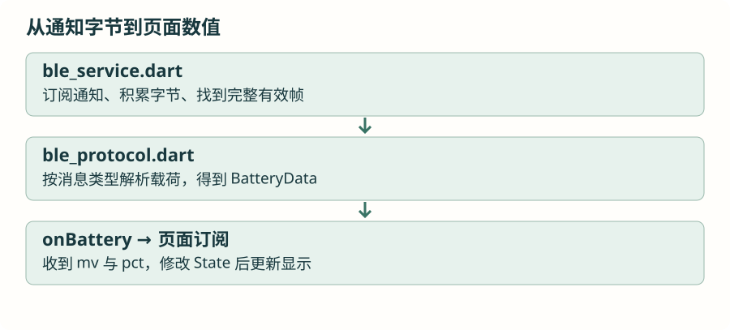

接回完整 App：沿一条消息读三个文件
已经写过页面、状态、异步和收发，现在把它们对应到仓库。先追踪一条电量消息，再扩展到已有的会话、备份和健康数据。
1 · 先从入口找到页面
main.dart 创建 SmartWatchApp，再通过 MaterialApp 的 home 进入 DashboardPage。页面以标签切换仪表盘、会话和个人设置，这些界面目前主要在 dashboard_page.dart 内。先找到 build 和标签索引，再分区域看，避免从上到下逐行阅读全部装饰代码。
先前的小程序始终显示一个电压，项目则同时维护多个结果、连接与操作状态。每一个字段都应回溯到一次输入事件，判断是最新值、累计统计，还是历史记录。
2 · 沿一条电量消息走完接收

服务的 StreamController 把已解析结果发布给页面的 Stream；Controller 是发布端，Stream 是接收入口，订阅负责每次事件回调。项目使用 broadcast 允许多个订阅者，这并不自动为迟到订阅者保存所有过去事件。
3 · 健康数据的“旧值”怎样管理
实时血氧无效、断连或超过五秒没有新有效数据时清除。睡眠报告中的 monitorMin 是累计时长，每次接收应更新显示，而不是把 5、10、15 三次报告相加。历史最低血氧属于历史统计，不能填补当前实时数据。
这些是业务字段含义带来的规则，不是所有数值共用一个超时就能解决。阅读每项订阅时，把对应的消息来源、有效标志、时间和清除条件写在一起，才知道断连后哪些显示应改变。
4 · 会话和备份接到哪里
Session 页发出活动类和开始、结束、取消命令。原型状态从设备反馈进入页面；Proto Backup/Pull 请求备份，再等待重组完成。恢复发送在 proto_transfer.dart 中逐片等待确认，最终提交成功才报告完成。
当前 App 尚缺完整的文件导入导出入口，原型存在手表 RAM 中，重启需要重新恢复或采集。这些限制在界面设计中应有对应状态，不能用现有 API 的存在推断完整用户流程已经实现。支线五 A 会讲清原型内容与备份语义。
5 · 用测试固定可见行为，再观察真机
仓库测试可以注入通信服务和模拟原生通道，验证页面状态而不依赖每次都连接手表。先运行 flutter analyze、flutter test；随后在 Android 真机核对权限、发现、订阅、断连恢复及消息往返。调试构建成功不等于无线稳定性和实际送达已经验证。
自己画一条电量接收与一条配置发送的路径，标明每个普通函数、异步等待和事件回调的位置。重复进入退出页面，确认没有重复订阅；最后列出仍需手表或手机系统才能验证的行为。